21周年本祭
日本のイベント攻略 ＞ 21周年本祭
■開催期間と全体の進め方
開催・コイン交換：2026年2月19日（木）メンテナンス後～3月26日（木）メンテナンス前。ウェルカムバック支援は4月23日（木）メンテナンス前までです。
| 遊び方 | 獲得・進行 | 目標 |
|---|---|---|
| ミッション | 1日5件、各コイン1枚 | 開始→達成→受領 |
| オーラ解放 | コインは週100枚まで | 狩りと重ねて集める |
| ビンゴ | 1マス2枚、全25マス | 全開放1枚分は50コイン |
| ガリオン | ソロ・10分制限 | 毎日報酬と討伐日数を進める |
| Webオーラ収集 | 1日1回、全28日の進行 | 3回の貢献先で最終報酬が変わる |
■記念コインの集め方
ミニマップのEVENTからミッションを「開始」し、達成後に「報酬受領」を押します。1日5件まで、1件につき21周年記念コイン1個です。リスト更新は1回10万Gold、1日3回まで。
| ミッション内容 | 報酬 |
|---|---|
| 累積ログイン30分記録 | |
| 「RED STONEのマナ(オーラ)」3回解放 | |
| 「混沌の大地」1回クリア | |
| 「試練のダンジョン」1回クリア | |
| 「アスタロト」デイリー討伐1回クリア | |
| 「シュラグ」デイリー討伐1回クリア | |
| 「ファルコン」デイリー討伐1回クリア | |
| 「悪魔ゲリオ」デイリー討伐を1回クリア | |
| 「宝箱(宝物地図)」を1回開封 | |
| モンスターを討伐して「100万ゴールド」を獲得 |
回数は毎日0時にリセット。進行中のミッションは0時を過ぎても残ります。進行中・完了済みのミッションは更新できず、同じミッションは再登場しません。リストと進行はサーバー内のキャラクターで共有します。
オーラ解放によるコインは週100枚まで。ミッションとログイン報酬のコインも合わせて、ビンゴ用と交換所用の残数を決めます。
■ビンゴと指輪
1マス開くたびに2コインを消費し、開いたマスの報酬を受け取ります。縦・横・斜めのライン完成で21周年プレゼントBox、全25マスの開放で更新褒賞を獲得します。全開放は50コイン。更新褒賞は最大7回です。
更新褒賞
| アイテム名 | 個数 | アイテム詳細 |
|---|---|---|
| 1 | 専用スクロールでオプションを3段階付与。装着制限1個。再開封可能回数5。選択後のオプション変更不可。 | |
| 1 | 21周年記念指輪へ1次オプションを選んで付与。選択後の変更不可。 | |
| 1 | 21周年記念指輪へ2次オプションを選んで付与。選択後の変更不可。 | |
| 1 | 21周年記念指輪へ3次オプションを選んで付与。選択後の変更不可。 | |
| 1 | Lv1000のULT武器から1つ選択。 | |
| 1 | 封印された力を解放。3種の追加効果から選択でき、失敗時の装備破壊を防ぐ。銀行取引不可。 | |
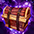 1000ULT防具選択BOX | 1 | Lv1000のULT防具から1つ選択。獲得品はすべて取引不可。 |
指輪を取った後は、1次→2次→3次の順に専用スクロールでオプションを付けていきます。3次までの4回分は200コイン、更新褒賞7回分は350コインです。200コインはミッション40日分に当たるため、オーラ解放とログイン報酬のコインも合わせて集めます。
指輪の選択オプション
| 1次 | ２次 | ３次 |
|---|---|---|
| 力＋１/レベル5 | 敏捷＋1/レベル5 | 健康＋１/レベル5 |
| 知識＋１/レベル5 | 知恵＋1/レベル5 | カリスマ＋１/レベル5 |
| 物理ダメージ100％増加 | ポーション回復速度 100％増加 | 運＋１/レベル5 |
| 攻撃速度35％増加 | ユニークアイテム ドロップ確率＋7%増加 | ポーション回復速度100％増加 |
| 火属性ダメージを ５％強化させる。 | 最大HP35％増加 | ユニークアイテム ドロップ確率＋7%増加 |
| 水属性ダメージを ５％強化させる。 | 防御力35％増加 | 最大HP35％増加 |
| 風属性ダメージを ５％強化させる。 | 最大CP15％増加 | 防御力35％増加 |
| 大地属性ダメージを ５％強化させる。 | 透明 | 最大CP15％増加 |
| 光属性ダメージを ５％強化させる。 | アイテム自動リロード | 透明 |
| 闇属性ダメージを ５％強化させる。 | アイテム自動リロード | |
| ポーション回復速度100％増加 | ||
| ユニークアイテム ドロップ確率＋7%増加 | ||
| 全てのスキルレベル3増加 |
各マスの報酬
| アイテム名 | 個数 | アイテム詳細 |
|---|---|---|
| ランディスの手作りクッキー | 10 | HP・CPを80%回復。 |
| 混沌の破片 | 100 | 効果・使用条件 |
| 2 | クリーチャーの餌と一緒に使い、獲得経験値を増加。消費数は素材によって異なる。銀行取引不可。 | |
| 1 | 指定した場所へ移動。銀行取引不可。 | |
| エオスコクーン | 1 | 効果・使用条件 |
| 1 | 装備を製錬し、出現する称号の数を増やす。銀行取引不可。 | |
| 魔力インク | 100 | 魔力溶解などで得られるインク。図案書の作成などに使用。 |
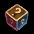 オプション魔法のお守り箱 | 1 | ランダムなオプションのお守りを獲得。お守りの付与には成功・失敗がある。 |
| ネフォンクリーチャーのマナ(中) | 1 | クリーチャーのマナ30個分。 |
| 1 | 錬成素材などへ使用する赤い光。 | |
| 不思議な紺碧の壺[取引不可] | 1 | 効果・使用条件 |
| 1 | Lv2000未満のモンスター討伐経験値を70分間140%増加。銀行取引不可。 | |
| 冒険団コイン | 20 | 冒険家協会の交換用コイン。 |
| 討伐許可証 | 1 | 効果・使用条件 |
| オプション魔法のお守り箱 | 1 | ランダムなオプションのお守りを獲得。お守りの付与には成功・失敗がある。 |
| クリーチャー水光石ボックス | 3 | 同じタイプの水光石を10個獲得。 |
| 1 | HPを100%即時回復。連続使用不可。 | |
| 21周年サンベリー | 1 | Lv2000未満のモンスター討伐経験値を80分間300%増加。1時間の経験値＋200%バフを併せて適用。他の果実と併用でき、同じサンベリー系とは重複しない。イベント期間のみ使用可能。銀行取引不可。 |
| 異界の強化石 | 2 | 装備の能力を強化する石。 |
| 冒険団コイン | 20 | 冒険家協会の交換用コイン。 |
| 1 | 指定した場所へ移動。銀行取引不可。 | |
| 覚醒石 | 4 | クリーチャー経験値の育成素材。 |
| 1 | セットオプションの魔法のお守りを獲得。銀行取引不可。 | |
| 2 | クリーチャー経験値の育成素材。銀行取引不可。 | |
| 1 | クリーチャー経験値の育成素材。銀行取引不可。 |
ライン完成：21周年プレゼントBoxの中身
下記からランダムで獲得します。
| アイテム名 | アイテム説明 |
|---|---|
| 製錬失敗時の保護用。1～10段階はLv低下なし、11～20段階はアイテム消滅なし。銀行取引不可。 | |
| 1個以上のオプションを解放したNxユニークに使用し、解放済みオプションをランダムに変換。追加リング・補助武器・投擲爪・壊れた装備には使用不可。銀行取引不可。 | |
| ネフォンクリーチャーをランダムで召喚。銀行取引不可。 | |
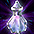 位相錬成一般触媒 x10 | フェーズストーンの錬成素材。 ※取引不可 |
| 装備を製錬し、出現する称号の数を増やす。銀行取引不可。 | |
| 下級ミルの鱗 x1 | 古竜の魔石を1個生成。高ランクを保証する品ではない。銀行取引不可。 |
| クリーチャーの餌と一緒に使い、獲得経験値を増加。消費数は素材によって異なる。銀行取引不可。 | |
| 成功率100%のオプション魔法のお守りをランダムで獲得。銀行取引不可。 | |
| レイド経験値をLv1～849は2倍、850～1999は6倍にする。Lv2000以上は経験値を得ず消費。銀行取引不可。 ※取引不可 | |
| 21周年サンベリー x1 | Lv2000未満のモンスター討伐経験値を80分間300%増加。1時間の経験値＋200%バフを併せて適用。他の果実と併用でき、同じサンベリー系とは重複しない。イベント期間のみ使用可能。銀行取引不可。 |
■コイン交換所
ミニマップのEVENT SHOPで交換。コインは3月26日メンテナンス前までに使います。
| アイテム名 | 必要コイン数 | 期間中上限 | アイテム詳細 |
|---|---|---|---|
| 30 | 3回 | 製錬失敗時の保護用。1～10段階はLv低下なし、11～20段階はアイテム消滅なし。銀行取引不可。 | |
| 異次元ボックス x1 | 30 | 1回 | 同じ種類の装備2個を合成し、称号を引き継ぐ。製錬数値は維持されない。 |
| 25 | 2回 | 完全な錬成に成功した場合、最初の封印オプションを解放。銀行取引不可。 | |
| 神秘のOP選択チケット x1 | 20 | 3回 | 選んだ神秘のオプション魔法のお守りを獲得。お守りの成功率は100%。 |
| 金色の魔力増幅魔法書 x1 | 15 | 5回 | ユニークを含む装備のオプションLvを上げる。 |
| 珍貴のOP選択チケット x1 | 10 | 3回 | 選んだ珍貴のオプション魔法のお守りを獲得。お守りの成功率は100%。 |
| 金色の再構成魔法書 x1 | 10 | 5回 | ユニークを含む装備のオプション数値を、そのLv範囲内で再抽選。 |
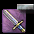 消滅の魔法書 x1 | 10 | 5回 | 指定した称号を1つ削除する。 |
| 青色の魔力増幅魔法書 x1 | 7 | 10回 | ユニーク以外の装備のオプションLvを上げる。 |
| 青色の再構成魔法書 x1 | 5 | 10回 | ユニーク以外の装備のオプション数値を、そのLv範囲内で再抽選。 |
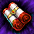 完全復活巻物 x1 | 3 | 5回 | 復活時の死亡ペナルティーを90%短縮し、30秒間最大HPを200%にする。 |
| 異界の清水 x10 | 3 | 10回 | 異界強化などに使う素材。 ※取引不可 |
| オプション魔法のお守り箱 x1 | 3 | 10回 | ランダムなオプションのお守りを獲得。お守りの付与には成功・失敗がある。 |
| 1 | 5回 | HPを100%即時回復。連続使用不可。 | |
| 冒険団コイン x10 | 1 | 20回 | 冒険家協会の交換用コイン。 ※取引不可 |
■イベントボス「ガリオン」
画面右側のイベントアイコンから入場。Lv・入場回数の制限なし、1人用、制限時間10分です。消耗品を使えますが、復活アイテムは使用できず、戦闘不能になると復活できません。進行はサーバーごとに共有します。
ノーマルのデイリー報酬は、討伐成功または制限時間終了で1日1回。累計討伐数は、実際に討伐した日だけ1日1回加算されます。どちらも毎日0時更新。条件を満たしたら報酬をクリックして受け取り、3月26日の終了前に回収します。
| 条件 | 報酬 | 個数 |
|---|---|---|
| ノーマルを1回プレイ | アップルマンゴーベリー | 1 |
ノーマル：累計討伐報酬
| 討伐日数 | 報酬 | 個数 |
|---|---|---|
| 1回 | 1 | |
| 2回 | 1 | |
| 3回 | 1 | |
| 5回 | 黒い異界の強化石 | 1 |
| 7回 | 1 | |
| 10回 | 1 | |
| 15回 | 1 | |
| 20回 | スロット集中錬成道具箱[S][E] | 1 |
| 25回 | 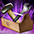 特製封印解放道具箱・改 | 1 |
| 30回 | プリズムコクーン | 1 |
| 35回 | ミルの鱗 | 1 |
チャレンジ：到達報酬
| 到達条件 | 報酬 | 個数 |
|---|---|---|
| HPバー1本分のダメージ | 赤い馬のHPバークーポン | 1 |
| HPバー15本分のダメージ | 1 | |
| HPバー35本分のダメージ | 赤い疾走称号エフェクトクーポン | 1 |
| HPバー50本分のダメージ・討伐 | プチ赤馬カーペット召喚セット | 1 |
チャレンジ報酬は各1回。HPバーと称号エフェクトの登録はサーバー内で共有され、レビットコクーン[E]は取引・銀行取引不可です。
■全28日のログイン報酬
各日の報酬を受け取って次の日へ進めます。受取先は、道具を使うキャラクターと銀行取引の可否を確認して選びましょう。
| 日数 | アイテム名 | 個数 | アイテム詳細 |
|---|---|---|---|
| 1日 | 1 | 活性化中のクリーチャー獲得経験値を増やすイベント用指輪。オプション強化不可。銀行取引不可。 | |
| 2日 | 経験値スクロール(上級) | 1 | Lv1700～1999で、9時間分の経験値の1%を獲得。銀行取引不可。 |
| 3日 | 2 | ビンゴと交換所の共通通貨。取引・銀行取引不可。3月26日10:00まで。 | |
| 4日 | 異界の強化石 | 5 | 装備の能力を強化する石。 |
| 5日 | 1 | クリーチャー経験値の育成素材。銀行取引不可。 | |
| 6日 | 21周年サンベリー | 1 | Lv2000未満のモンスター討伐経験値を80分間300%増加。1時間の経験値＋200%バフを併せて適用。他の果実と併用でき、同じサンベリー系とは重複しない。イベント期間のみ使用可能。銀行取引不可。 |
| 7日 | 3 | ビンゴと交換所の共通通貨。取引・銀行取引不可。3月26日10:00まで。 | |
| 8日 | 覚醒石 | 1 | クリーチャー経験値の育成素材。 |
| 9日 | 1 | 1個以上のオプションを解放したNxユニークに使用し、解放済みオプションをランダムに変換。追加リング・補助武器・投擲爪・壊れた装備には使用不可。銀行取引不可。 | |
| 10日 | 爆竜の心臓 | 2 | 10分間CPを最大値に維持。同効果の重複使用不可。 |
| 11日 | ネフォンクリーチャーのマナ(大) | 1 | クリーチャーのマナ100個分。 |
| 12日 | 1 | クリーチャー経験値の育成素材。銀行取引不可。 | |
| 13日 | 異界の強化石 | 5 | 装備の能力を強化する石。 |
| 14日 | 5 | ビンゴと交換所の共通通貨。取引・銀行取引不可。3月26日10:00まで。 | |
| 15日 | 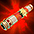 紅炎のスクロール | 3 | 効果・使用条件 ※取引不可 |
| 16日 | 古代森のコイン | 5 | 「終焉の森」関連の交換用コイン。 ※取引不可 |
| 17日 | 5 | ビンゴと交換所の共通通貨。取引・銀行取引不可。3月26日10:00まで。 | |
| 18日 | 1 | ネフォンクリーチャーをランダムで召喚。銀行取引不可。 | |
| 19日 | 爆竜の心臓 | 3 | 10分間CPを最大値に維持。同効果の重複使用不可。 |
| 20日 | 1 | 1個以上のオプションを解放したNxユニークに使用し、解放済みオプションをランダムに変換。追加リング・補助武器・投擲爪・壊れた装備には使用不可。銀行取引不可。 | |
| 21日 | 21周年プレゼントBox | 3 | 効果・使用条件 |
| 22日 | 経験値スクロール(上級) | 1 | Lv1700～1999で、9時間分の経験値の1%を獲得。銀行取引不可。 |
| 23日 | 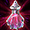 位相錬成高級触媒 | 1 | フェーズストーンの錬成素材。 ※取引不可 |
| 24日 | 5 | ビンゴと交換所の共通通貨。取引・銀行取引不可。3月26日10:00まで。 | |
| 25日 | 1 | 解放済みのNxオプションをランダムに変換。追加リング・補助武器・投擲爪・壊れた装備には使用不可。銀行取引不可。 | |
| 26日 | 黒い異界の強化石 | 1 | 異界強化に使用する強化石。 |
| 27日 | 赤い覚醒石 | 1 | クリーチャー経験値の育成素材。 |
| 28日 | 1 | HR等級のクリーチャーを1体召喚。銀行取引不可。 |
■Webオーラ収集
公式サイトにログインし、特設ページで1日1回オーラを収集します。6日分を集めた後、7・14・21日目に勢力へ貢献し、28日目の最終報告へ進みます。報酬は買い物カゴに届きます。
| 貢献先 | 最終報酬の条件 |
|---|---|
| 天上界 | 3回のうち2回以上→テマヌエル |
| 地下界 | 3回のうち2回以上→バルラレル |
| 赤い悪魔 | 3回のうち2回以上→バイル |
| 各勢力へ1回ずつ | 冒険家協会 |
最終報酬から欲しい用途を選び、2回以上同じ勢力へ貢献するか、3勢力に1回ずつ配るかを先に決めます。選択は各チャプターの貢献時に行います。
第1チャプター：収集報酬の候補
| アイテム名 | アイテム詳細 |
|---|---|
| コンテスト装備を獲得するBox。 | |
| 古代森のコイン x1 | 「終焉の森」関連の交換用コイン。 ※取引不可 |
| 大型魔力インク瓶 x1 | 効果・使用条件 ※取引不可 |
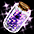 ペパーミントフラワーの硝子ビン x1 | 効果・使用条件 ※取引不可 |
| 21周年サンベリー x1 | Lv2000未満のモンスター討伐経験値を80分間300%増加。1時間の経験値＋200%バフを併せて適用。他の果実と併用でき、同じサンベリー系とは重複しない。イベント期間のみ使用可能。銀行取引不可。 |
| コスチューム強化・合成の素材。銀行取引不可。 | |
| 共鳴石 x1 | 効果・使用条件 ※取引不可 |
| 炎の石 x1 | 錬成素材。クリーチャー経験値の育成素材としても使用可能。 ※取引不可 |
| 錬成素材などへ使用する赤い光。 | |
| レイド経験値をLv1～849は2倍、850～1999は6倍にする。Lv2000以上は経験値を得ず消費。銀行取引不可。 ※取引不可 | |
| ペブルコクーンパッケージ[3個] x1 | 効果・使用条件 |
第2チャプター：収集報酬の候補
| アイテム名 | アイテム詳細 |
|---|---|
| コンテスト装備を獲得するBox。 | |
| 完全復活巻物 x1 | 復活時の死亡ペナルティーを90%短縮し、30秒間最大HPを200%にする。 |
| 下級ミルの鱗 x1 | 古竜の魔石を1個生成。高ランクを保証する品ではない。銀行取引不可。 |
| 古代森のコイン x1 | 「終焉の森」関連の交換用コイン。 ※取引不可 |
| 大型魔力インク瓶 x1 | 効果・使用条件 ※取引不可 |
| ペパーミントフラワーの硝子ビン x1 | 効果・使用条件 ※取引不可 |
| 21周年サンベリー x1 | Lv2000未満のモンスター討伐経験値を80分間300%増加。1時間の経験値＋200%バフを併せて適用。他の果実と併用でき、同じサンベリー系とは重複しない。イベント期間のみ使用可能。銀行取引不可。 |
| コスチューム強化・合成の素材。銀行取引不可。 | |
| 共鳴石 x1 | 効果・使用条件 ※取引不可 |
| 炎の石 x1 | 錬成素材。クリーチャー経験値の育成素材としても使用可能。 ※取引不可 |
| レイド経験値をLv1～849は2倍、850～1999は6倍にする。Lv2000以上は経験値を得ず消費。銀行取引不可。 ※取引不可 | |
| ペブルコクーンパッケージ[3個] x1 | 効果・使用条件 |
第3チャプター：収集報酬の候補
| アイテム名 | アイテム詳細 |
|---|---|
| コンテスト装備を獲得するBox。 | |
| 装備を製錬し、出現する称号の数を増やす。銀行取引不可。 | |
| 下級ミルの鱗 x1 | 古竜の魔石を1個生成。高ランクを保証する品ではない。銀行取引不可。 |
| 古代森のコイン x3 | 「終焉の森」関連の交換用コイン。 ※取引不可 |
| 大型魔力インク瓶 x2 | 効果・使用条件 ※取引不可 |
| ペパーミントフラワーの硝子ビン x2 | 効果・使用条件 ※取引不可 |
| 21周年サンベリー x1 | Lv2000未満のモンスター討伐経験値を80分間300%増加。1時間の経験値＋200%バフを併せて適用。他の果実と併用でき、同じサンベリー系とは重複しない。イベント期間のみ使用可能。銀行取引不可。 |
| コスチューム強化・合成の素材。銀行取引不可。 | |
| 共鳴石 x3 | 効果・使用条件 ※取引不可 |
| 炎の石 x3 | 錬成素材。クリーチャー経験値の育成素材としても使用可能。 ※取引不可 |
| 異界の強化石 x5 | 装備の能力を強化する石。 |
| レイド経験値をLv1～849は2倍、850～1999は6倍にする。Lv2000以上は経験値を得ず消費。銀行取引不可。 ※取引不可 |
第4チャプター：収集報酬の候補
| アイテム名 | アイテム詳細 |
|---|---|
| コンテスト装備を獲得するBox。 | |
| 位相錬成高級触媒 x1 | フェーズストーンの錬成素材。 ※取引不可 |
| 製錬失敗時の保護用。1～10段階はLv低下なし、11～20段階はアイテム消滅なし。銀行取引不可。 | |
| 下級ミルの鱗 x2 | 古竜の魔石を1個生成。高ランクを保証する品ではない。銀行取引不可。 |
| 古代森のコイン x3 | 「終焉の森」関連の交換用コイン。 ※取引不可 |
| ペパーミントフラワーの硝子ビン x2 | 効果・使用条件 ※取引不可 |
| 21周年サンベリー x1 | Lv2000未満のモンスター討伐経験値を80分間300%増加。1時間の経験値＋200%バフを併せて適用。他の果実と併用でき、同じサンベリー系とは重複しない。イベント期間のみ使用可能。銀行取引不可。 |
| 共鳴石 x3 | 効果・使用条件 ※取引不可 |
| 炎の石 x3 | 錬成素材。クリーチャー経験値の育成素材としても使用可能。 ※取引不可 |
| 異界の強化石 x5 | 装備の能力を強化する石。 |
| レイド経験値をLv1～849は2倍、850～1999は6倍にする。Lv2000以上は経験値を得ず消費。銀行取引不可。 ※取引不可 |
チャプター完了時：貢献報酬の候補
| アイテム名 | アイテム詳細 |
|---|---|
| コンテストコクーン x1 | 効果・使用条件 |
| 解放済みのNxオプションをランダムに変換。追加リング・補助武器・投擲爪・壊れた装備には使用不可。銀行取引不可。 | |
| 爆竜の心臓 x1 | 10分間CPを最大値に維持。同効果の重複使用不可。 |
| ミニペットの育成用。3種類の餌から1つ選択。銀行取引不可。 | |
| ネフォンクリーチャーをランダムで召喚。銀行取引不可。 | |
| 下級ミルの鱗 x1 | 古竜の魔石を1個生成。高ランクを保証する品ではない。銀行取引不可。 |
| ネフォンクリーチャーのマナ(大) x1 | クリーチャーのマナ100個分。 |
| 完全復活巻物 x1 | 復活時の死亡ペナルティーを90%短縮し、30秒間最大HPを200%にする。 |
テマヌエルのプレゼント
| アイテム名 | アイテム詳細 |
|---|---|
| ネフォンクリーチャーをランダムで召喚。銀行取引不可。 | |
| ミニハイパーシャインパウダー Lite x1 | 効果・使用条件 |
| ミニツインフレーム Lite x1 | 効果・使用条件 |
| 21周年サンベリー x1 | Lv2000未満のモンスター討伐経験値を80分間300%増加。1時間の経験値＋200%バフを併せて適用。他の果実と併用でき、同じサンベリー系とは重複しない。イベント期間のみ使用可能。銀行取引不可。 |
バルラレルのプレゼント
| アイテム名 | アイテム詳細 |
|---|---|
| 位相錬成高級触媒 x5 | フェーズストーンの錬成素材。 ※取引不可 |
| 下級ミルの鱗を10個獲得。 | |
| 位相錬成高級触媒 x1 | フェーズストーンの錬成素材。 ※取引不可 |
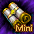 ミニステータス再配分巻物 x1 | 効果・使用条件 |
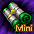 ミニスキル再配分巻物 x1 | 効果・使用条件 |
| 対象のレア超越の書から1種選択。取引・銀行取引不可。 | |
| 完全復活巻物 x1 | 復活時の死亡ペナルティーを90%短縮し、30秒間最大HPを200%にする。 |
| レイド経験値をLv1～849は2倍、850～1999は6倍にする。Lv2000以上は経験値を得ず消費。銀行取引不可。 ※取引不可 | |
| 21周年サンベリー x1 | Lv2000未満のモンスター討伐経験値を80分間300%増加。1時間の経験値＋200%バフを併せて適用。他の果実と併用でき、同じサンベリー系とは重複しない。イベント期間のみ使用可能。銀行取引不可。 |
バイルのプレゼント
| アイテム名 | アイテム詳細 |
|---|---|
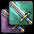 鏡の魔法書 x1 | アイテムを複製。失敗時は対象が壊れる。複製品は基本的に取引不可。RED STONEハンター称号が必要。 |
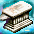 天上の鉄床[取引不可] x1 | 壊れた装備を完全修理。スーパーユニークの称号はすべて1回にする。 |
| 運命のOP選択チケット x1 | 選んだDXオプションのお守りを獲得。お守りの成功率は100%。 |
| 解放済みのNxオプションをランダムに変換。一部オプションの出現率を高めた改良型。追加リング・補助武器・投擲爪・壊れた装備には使用不可。銀行取引不可。 | |
| 10～14段階の製錬失敗時は1段階低下。1～10段階はLv低下なし、11～15段階は製錬失敗時Lv1低下、11～20段階は消滅なし。銀行取引不可。 | |
| 封印された力を解放。3種の追加効果から選択でき、失敗時の装備破壊を防ぐ。銀行取引不可。 | |
| 異次元ボックス x1 | 同じ種類の装備2個を合成し、称号を引き継ぐ。製錬数値は維持されない。 |
| 完全な錬成に成功した場合、最初の封印オプションを解放。銀行取引不可。 ※取引不可 | |
| 1個以上のオプションを解放したNxユニークに使用し、解放済みオプションをランダムに変換。追加リング・補助武器・投擲爪・壊れた装備には使用不可。銀行取引不可。 | |
| 金色の再構成魔法書 x1 | ユニークを含む装備のオプション数値を、そのLv範囲内で再抽選。 |
| Nxユニークの封印オプションを10%で1つ解放。失敗時はオプション数を変更しない。銀行取引不可。 | |
| 青色の再構成魔法書 x1 | ユニーク以外の装備のオプション数値を、そのLv範囲内で再抽選。 |
| 消滅の魔法書 x1 | 指定した称号を1つ削除する。 |
| 21周年サンベリー x1 | Lv2000未満のモンスター討伐経験値を80分間300%増加。1時間の経験値＋200%バフを併せて適用。他の果実と併用でき、同じサンベリー系とは重複しない。イベント期間のみ使用可能。銀行取引不可。 |
冒険家協会のプレゼント
| アイテム名 | アイテム詳細 |
|---|---|
| ※アイテムを使用すると「5色のかせ糸10個」を獲得します。 | |
| ポータル・スフィアーULT[1日版] x1 | 効果・使用条件 |
| ※アイテムを使用すると「冒険団コイン100個」を獲得します。 | |
| 21周年サンベリー x1 | Lv2000未満のモンスター討伐経験値を80分間300%増加。1時間の経験値＋200%バフを併せて適用。他の果実と併用でき、同じサンベリー系とは重複しない。イベント期間のみ使用可能。銀行取引不可。 |
■ウェルカムバック支援
新規会員登録、アカウント復旧、30日以上ログインしていない復帰者が対象となる支援です。スフィアーやパワーキットは買い物カゴから出すと期限が始まるため、育成する日に受け取ります。配布品はすべて取引不可です。
新規会員登録
| アイテム名 | 個数 | アイテム詳細 |
|---|---|---|
| ポータル・スフィアーULT[7日版] | 1 | 有効期間7日。買い物カゴから出した時点で期限を設定。 ※取引不可です。 ※買い物カゴから出すと有効期限が設定されます。 |
| ポータル・パワーキット[1時間版] | 9 | 有効期間1時間。買い物カゴから出した時点で期限を設定。 ※取引不可です。 ※買い物カゴから出すと有効期限が設定されます。 |
| ポータル・パワーキット[3時間版] | 5 | 有効期間3時間。買い物カゴから出した時点で期限を設定。 ※取引不可です。 ※買い物カゴから出すと有効期限が設定されます。 |
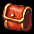 ミニマジックバッグ | 1 | インベントリを2枠拡張。満杯の状態で使用しない。 |
| ファーストフルヒールポーション [50個セット] | 1 | HP100%即時回復のポーション50個のセット。連続使用不可。 |
| 爆竜の心臓 | 5 | 10分間CPを最大値に維持。同効果の重複使用不可。 |
アカウント復旧
| アイテム名 | 個数 | アイテム詳細 |
|---|---|---|
| ポータル・スフィアーULT[7日版] | 1 | 有効期間7日。買い物カゴから出した時点で期限を設定。 ※買い物カゴから出すと有効期限が設定されます。 |
| ポータル・パワーキット[1時間版] | 9 | 有効期間1時間。買い物カゴから出した時点で期限を設定。 ※取引不可です。 ※買い物カゴから出すと有効期限が設定されます。 |
| ポータル・パワーキット[3時間版] | 5 | 有効期間3時間。買い物カゴから出した時点で期限を設定。 ※取引不可です。 ※買い物カゴから出すと有効期限が設定されます。 |
| ミニ祈りのカケラ探索機 | 1 | 効果・使用条件 |
| ミニハイパーシャインパウダー Lite | 3 | 効果・使用条件 |
| 3 | ミニペット2体を同時に活性化。期間3日。銀行取引不可。 | |
| 1 | 対象のSRクリーチャーから選択。 | |
| 1 | 対象のLv775ULTU武器から選択。 | |
| 7 | 対象のLv775ULTU防具から選択。 | |
| マジックバッグ | 1 | インベントリを4枠拡張。満杯の状態で使用しない。 |
| ファーストフルヒールポーション [50個セット] | 1 | HP100%即時回復のポーション50個のセット。連続使用不可。 |
| 爆竜の心臓 | 5 | 10分間CPを最大値に維持。同効果の重複使用不可。 |
復帰者ログイン
| アイテム名 | 個数 | アイテム詳細 |
|---|---|---|
| ポータル・パワーキット[3時間版] | 1 | 有効期間3時間。買い物カゴから出した時点で期限を設定。 |
| ファーストフルヒールポーション | 5 | HPを100%即時回復。連続使用不可。 |
| 爆竜の心臓 | 5 | 10分間CPを最大値に維持。同効果の重複使用不可。 |
| ポータル・パワーキット[3時間版] | 1 | 有効期間3時間。買い物カゴから出した時点で期限を設定。 |
| ミニハイパーシャインパウダー Lite | 1 | 効果・使用条件 |
| 1 | ミニペット2体を同時に活性化。期間3日。銀行取引不可。 | |
| ポータル・パワーキット[3時間版] | 1 | 有効期間3時間。買い物カゴから出した時点で期限を設定。 |
| ポータル・スフィアーULT[7日版] | 1 | 有効期間7日。買い物カゴから出した時点で期限を設定。 |
| ファーストフルヒールポーション | 5 | HPを100%即時回復。連続使用不可。 |
| 爆竜の心臓 | 5 | 10分間CPを最大値に維持。同効果の重複使用不可。 |
| ポータル・パワーキット[3時間版] | 1 | 有効期間3時間。買い物カゴから出した時点で期限を設定。 |
| ミニハイパーシャインパウダー Lite | 1 | 効果・使用条件 |
| 1 | ミニペット2体を同時に活性化。期間3日。銀行取引不可。 | |
| ポータル・パワーキット[3時間版] | 1 | 有効期間3時間。買い物カゴから出した時点で期限を設定。 |
■おすすめの進め方
短時間の日はミッション開始と受取を先に
ログイン30分・100万Gold・オーラ3回・宝物地図・普段行くデイリー討伐を、表示されたリストから選びます。リスト抽選のため、毎日同じ5件を選べるとは限りません。コインだけを目当てに混沌・試練の入場素材を追加消費しない形で続けましょう。
指輪の目標に合わせて50枚・200枚を確保
| 目的 | コインの確保例 | 進め方 |
|---|---|---|
| 記念指輪が欲しい | 最初の全開放分50枚 | 先にビンゴを完成。指輪を強化するなら次の3回分も残す |
| 指輪を3次まで進める | ビンゴ4回分200枚 | 100枚を先に交換所へ使い切らず、必要なスクロールまで進める |
| 装備強化も進める | 製錬ガード3個90枚＋異次元1個30枚＝120枚 | 指輪3次までと両方狙う場合は合計320枚。ビンゴ用200枚を残して交換する |
ガリオンとWebはゲーム内コインとは別に進める
ガリオンのノーマルは討伐成功を目指すと、デイリー報酬と累計討伐を一緒に進められます。倒せない日も制限時間終了でデイリー報酬を受け取れます。チャレンジは次の到達報酬を狙える装備で挑む形です。Webオーラは特設ページで収集し、7・14・21日目の貢献と28日目の最終報告まで進めます。